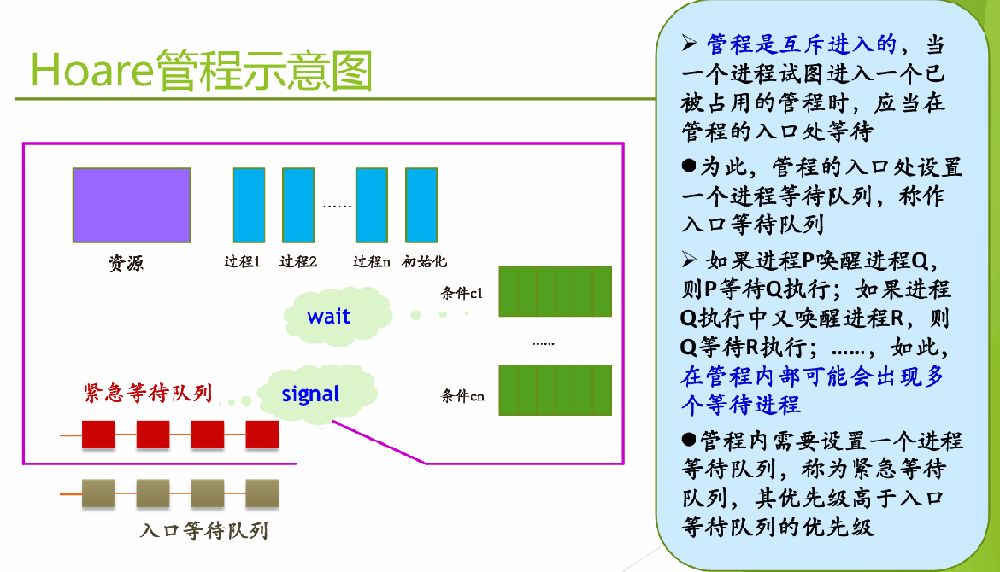

一、并发执行带来的问题 #
进程/线程并发执行的基本特征：执行过程是间断的、相对速度不可预测、结果取决于精确时序（不确定性）。
并发是所有问题的基础，也是操作系统设计的基础。
1.1 竞态条件（Race Condition） #
两个或多个进程/线程读写共享数据时，最终结果取决于它们运行的精确时序。
例子1：ATM 取款
T1: read(x); if x>=1000 then x:=x-1000; write(x); // 取 1000
T2: read(x); if x>=2000 then x:=x-2000; write(x); // 取 2000若 T1 和 T2 的 read/write 交叉执行，最终余额可能错误。
例子2：cnt++ 的汇编级竞态
movq cnt(%rip), %rdx ; Load
addq $1, %rdx ; Update
movq %rdx, cnt(%rip) ; Store两个线程同时 Load 到旧值 → 两次 cnt++ 的结果可能只加了一次。
1.2 临界区（Critical Section） #
临界资源（critical resource）：一次只允许一个进程使用的共享资源。
临界区（critical section）：进程中访问临界资源的代码片段。
使用原则：
- 有空让进：无进程在临界区时，任何有权进程可进入
- 无空等待：不允许两个以上进程同时进入
- 有限等待：进入临界区的要求在有限时间内满足
- 多中择一：多个进程同时请求时，只能让其中之一进入
- 让权等待：等待时应放弃 CPU
1.3 互斥与同步 #
| 互斥（Mutual Exclusion） | 同步（Synchronization） | |
|---|---|---|
| 关系 | 竞争共享资源，排他性使用 | 协作完成任务，存在时序关系 |
| 场景 | 写同一变量、同一文件 | 生产者-消费者、读者-写者 |
二、软件互斥解法 #
2.1 早期尝试 #
| 方案 | 思路 | 问题 |
|---|---|---|
| 方案1 | while(free); free=true; — 临界区 — free=false |
lock() 不原子 |
| 方案2 | while(not turn); — 临界区 — turn=other |
强制轮流，无空不让进 |
| 方案3 | pturn=true; while(qturn); — pturn=false |
After you 死锁 |
2.2 Dekker 算法（1965） #
第一个正确解决互斥问题的软件方案。结合 pturn / qturn（想进标志）+ turn （裁决变量）：若双方都想进，由 turn 裁决谁先谁后。
2.3 Peterson 算法（1981） #
int turn;
int interested[2] = {FALSE, FALSE};
void enter_region(int process) {
int other = 1 - process;
interested[process] = TRUE;
turn = process;
while (turn == process && interested[other] == TRUE);
}
void leave_region(int process) {
interested[process] = FALSE;
}解决了强制轮流问题，且避免了死锁。
三、硬件互斥解法 #
3.1 关闭中断 #
disable_interrupts();
// critical section
enable_interrupts();简单高效，但不适用于多处理器；适用于 OS 内核，不适于用户进程。
3.2 TSL（Test and Set Lock）指令 #
enter_region:
tsl register, lock ; 复制锁到寄存器并将锁置 1
cmp register, #0 ; 锁原来是 0 吗？
jne enter_region ; 否 → 自旋等待
ret ; 是 → 进入临界区
leave_region:
mov lock, #0
retTSL 是原子的"读-改-写"指令，多处理器有效，但忙等待形成自旋锁（Spin Lock）。
硬件方法存在优先级反转问题：高优先级进程自旋等待低优先级进程释放锁。
四、信号量与 PV 操作 #
由 Dijkstra 于 1965 年提出。
4.1 信号量定义 #
struct semaphore {
int count; // 信号量值
queueType queue; // 等待队列
};4.2 P / V 操作 #
P(s): V(s):
s.count--; s.count++;
if (s.count < 0) { if (s.count <= 0) {
阻塞当前进程； 唤醒 s.queue 中一个进程；
插入 s.queue 等待； 改为就绪态，插入就绪队列；
重新调度； }
}- P (proberen) = 测试/申请，V (verhogen) = 增加/释放
- P、V 是原语（不可中断），通过关中断或 TSL 实现
|s.count|= 等待队列中的进程数
4.3 用 PV 解决互斥 #
semaphore mutex = 1;
P(&mutex); // 进入临界区
/* critical section */
V(&mutex); // 离开临界区
4.4 用 PV 解决生产者-消费者问题 #
semaphore mutex = 1; // 互斥访问缓冲区
semaphore empty = N; // 空闲槽位数
semaphore full = 0; // 已占用槽位数
// 生产者
item = produce_item();
P(&empty); // 先申请空位（同步），再申请互斥
P(&mutex);
insert_item(item);
V(&mutex);
V(&full);
// 消费者
P(&full); // 先等有货，再申请互斥
P(&mutex);
item = remove_item();
V(&mutex);
V(&empty);两个 P 顺序不能颠倒——先 P(mutex) 再 P(empty) 会导致死锁（缓冲区满时生产者持 mutex 等 empty，消费者等 mutex 无法消费）。
4.5 用 PV 解决读者-写者问题 #
问题描述：多个进程共享一个数据区，这些进程分为两组：
- 读者进程：只读数据区中的数据
- 写者进程：只往数据区写数据
要求满足条件：允许多个读者同时执行读操作；不允许多个写者同时操作；不允许读者、写者同时操作
- 读者优先
描述：
int rc = 0; // 读者计数
semaphore mutex = 1; // 保护 rc
semaphore w = 1; // 写者/第一个读者的互斥
// 读者
P(&mutex);
rc++;
if (rc == 1) P(&w); // 第一个读者锁住写者
V(&mutex);
/* 读操作 */
P(&mutex);
rc--;
if (rc == 0) V(&w); // 最后一个读者释放写者
V(&mutex);
// 写者
P(&w);
/* 写操作 */
V(&w);五、管程（Monitor） #
是一种语言机制，核心是条件变量/wait/signal
5.1 为什么引入管程 #
信号量机制的 PV 操作分散在代码各处，编写困难、容易出错。管程将共享数据、操作和同步集中在一个模块中，由编译器保证互斥，是一种高级同步机制。
5.2 管程结构 #
管程 Monitor：
┌─ 共享数据结构
├─ 一组操作过程（互斥进入，编译器保证）
├─ 条件变量 + wait / signal
└─ 初始化代码管程由关于共享资源的数据结构及在其上操作的一组过程组成。
进程只能通过调用管程中的过程来间接访问管程中的数据结构。过程是互斥的，某一时刻只能有一个进程在管程中执行。
5.3 条件变量与 wait / signal #
管程需要解决两个问题：一是互斥，这个由编译器负责保证（管程是互斥进入的）；二是同步，管程中通过设置条件变量及等待/唤醒操作来解决。具体的策略是，可以让一个进程/线程在条件变量上等待，此时，先释放管程的使用权；后面通过发送信号来将这些等待的进程/线程唤醒。
条件变量：管程内用于同步的特殊变量，每个条件变量关联一个等待队列。
这里有一个问题是，当一个进程在管程中执行 wait 后，应当释放管程互斥权；但后续 signal 唤醒时，管程中存在两个活跃进程。有三种解决方案：
| 方案 | signal 后的处理 |
|---|---|
| Hoare | 唤醒者进入紧急队列等待，被唤醒者立即执行 |
| Hansen (Concurrent Pascal) | signal 必须是管程最后一个操作 |
| Mesa | signal → notify，唤醒者继续执行，被唤醒者将来恢复 |
5.4 Hoare 管程 #

wait(c):
若紧急队列非空 → 唤醒第一个等待者
否则 → 释放管程互斥权，自身进入 c 链尾部
signal(c):
若 c 链非空 → 唤醒第一个等待者，自身进入紧急队列尾部
否则 → 空操作- 入口等待队列：等待进入管程
- 紧急等待队列：因 signal 而被挂起的进程，优先级高于入口队列

在JAVA中，synchronized 块就是一个管程，go_to_sleep() / notify() 就是条件变量的 wait/signal。例如public synchronized void insert(int val)。
5.5 Mesa 管程 #
signal → notify：通知 c 队列，唤醒者继续执行。
被唤醒进程在将来某时恢复执行，不能保证在它之前没有其他进程进入管程，可能会导致条件又不成立了，必须用 while 重新检查条件（而非 if）。
Mesa 优于 Hoare：在Hoare中有两次额外的进程切换，可能会使条件队列中的进程永久挂起。没有额外的进程切换开销，且因 while 重检条件，错误唤醒不会导致出错。
对notify的改进：给每个条件原语关联一个监视计时器，不论条件是否被通知，一个等待时间超时的进程将被设置为就绪状态。当该进程被调度执行时，会再次检查相关条件，如果条件满足则继续执行。超时可以防止如下情况的发生：当某些进程在产生相关条件的信号之前失败时，等待该条件的进程被无限制地推迟执行而处于饥饿状态。
5.6 broadcast #
使某条件变量上的所有等待进程进入就绪态。适用于：不知道有多少进程需要被激活；生产者产生一批数据但不知道每个消费者消耗多少。
5.7 用信号量构造管程（间接实现） #
利用基础管程模块（enter/leave/wait/signal），每个基础管程维护 mutex（入口互斥）、urgent（紧急等待队列）和 urgent_count。条件变量映射为独立的信号量和等待计数。
六、锁（Mutex） #
锁常用于实现用户空间线程包，有加锁和解锁两种状态。
6.1 锁的实现方式 #
| 方式 | 特点 |
|---|---|
| 关闭中断 | 单 CPU 有效，忙等待 |
| TSL / XCHG 指令 | 多 CPU 有效，自旋锁 |
| 睡眠/唤醒 + 关中断 | 无忙等待，保护等待队列 |
6.2 锁的基本结构 #
struct mutex {
bool locked;
queue_t queue;
};
mutex_lock() {
while (atomic_swap(&locked, true) == true) {
add_to_queue(&queue, current_thread);
yield_cpu(); // 让出 CPU
}
}
mutex_unlock() {
atomic_swap(&locked, false);
if (!queue_empty) wakeup(next_thread);
}七、Pthreads 中的同步机制 #
| 类型 | API | 用途 |
|---|---|---|
| 互斥锁 | pthread_mutex_lock / unlock |
保护临界区 |
| 条件变量 | pthread_cond_wait / signal / broadcast |
线程间同步 |
pthread_cond_wait 的三个原子动作：解锁 → 等待信号 → 收到信号后重新上锁。被唤醒后必须用 while 重新检查条件。
八、同步机制的层次 #
硬件原子操作（load/store、关中断、TSL、XCHG）
↓
同步原语（信号量、管程、锁、条件变量）
↓
并发程序（进程/线程）硬件事务内存是一些新的硬件扩展，从硬件层面支持一部分事务性、原子性，可以提高现代多核场景下的并发度。
现代硬件充满了指令重排，表面看没有使用锁的代码可能也会有并发问题。
原子操作：在执行过程中不可被中断的操作，保证了并发环境下的正确性。在硬件层面，有CPU指令保证，例如在x86中的LOCK前缀指令。在操作系统层面，可以封装成API。
Futex(fast user-space mutex) 是一种高效的用户空间锁实现，结合了用户空间的快速路径和内核空间的慢速路径。它允许线程在用户空间进行快速的锁操作(不进入内核，不系统调用，无开销，速度极快)，只有在发生竞争时才进入内核进行等待和唤醒，从而减少了上下文切换的开销。
九、XV6 中的同步机制 #
| 机制 | 实现 | 应用场景 |
|---|---|---|
| spinlock | acquire() / release()，忙等待 |
proc、kmem、log、console |
| sleeplock | 用 spinlock 保护内部结构，阻塞等待 | inode 操作（fs.c, bio.c） |
| sleep / wakeup | 等效 P / V，chan 作为信号标识，sleep 时释放 lock |
proc、bio、pipe |
XV6 的生产者-消费者实例：pipe.c 中的环形缓冲区 pi->data，用 sleep / wakeup 实现同步。